수료증, 작별 인사,
그리고 깜짝 생일파티 🏅🎂
Some days carry more than one thing at once. Today we handed out certificates, said goodbye to four students heading home to Korea, celebrated a sixth birthday nobody saw coming, and finished the afternoon in the pool.
“It is such a joy teaching each group of students week by week as new students come, join, and essentially contribute to the learning dynamic in their unique ways, as the summer unfolds.”
This past month brought Tim, Ian, Lincoln, Henry, Ina and Omid into the class — and Loha back with us. Every one of them changed the room a little just by being in it.
🏅 Certificates of Participation Earned, not given
Tim, Ian, Lincoln and Henry received their Certificate of Participation today, awarded for academic excellence and participation across the summer camp. Each carries a Best Award seal and the signatures of the director and their teacher.

JC Afterschool English and Academic Summer Camp 2026
in Coquitlam, BC, Canada
They came with real enthusiasm — to learn, and to connect with the people around them. They kept up with all of it: science, math, grammar and geography, working new vocabulary and idiomatic expressions straight into their own writing. And they took on every assignment, however hard it turned out to be for them.
📕 The Adventure Books, Finished Every path, an ending
The week's literacy project came due, and both of them finished complete books in the classic Choose Your Own Adventure style — where every page ends in a decision and every decision leads somewhere different.
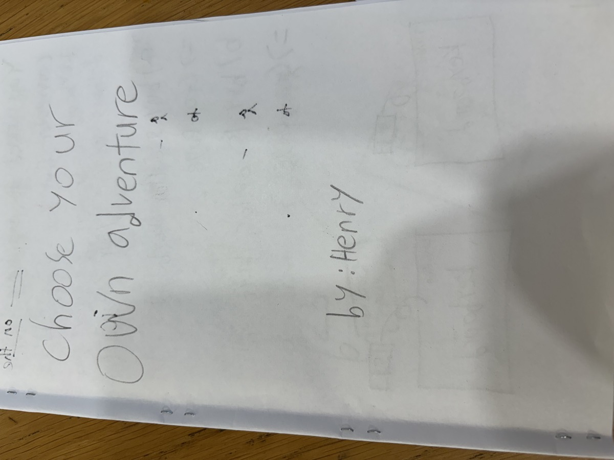
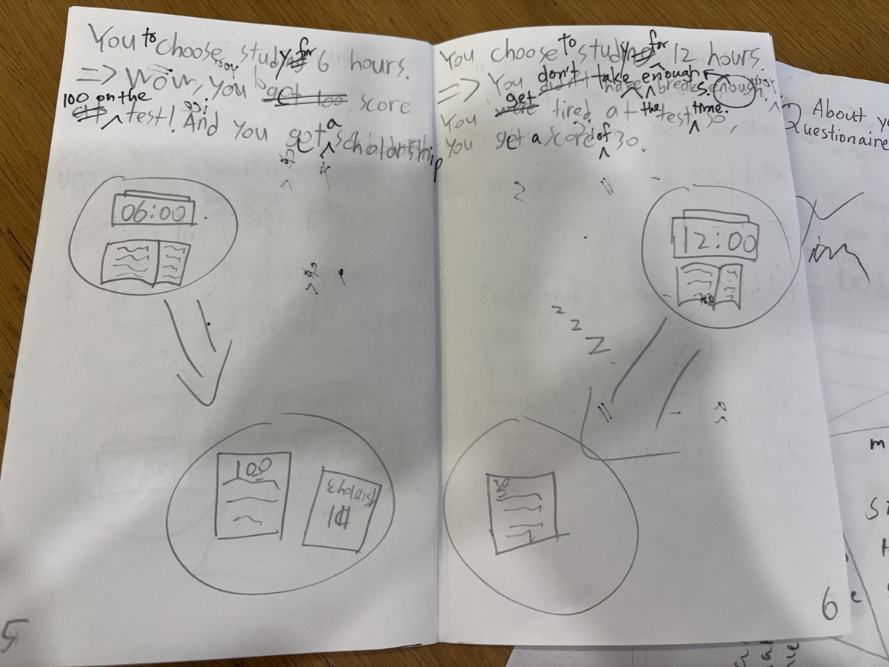
Teacher's verdict
Henry's was the most well-written — thoughtful, logically sequenced and genuinely interesting. Lincoln's was a close runner-up, and quite funny.
🍲 Dwaeji Gukbap, Explained A presentation in English
Henry and Lincoln also gave a presentation on dwaeji gukbap — Korean pork soup. Explaining a dish from home, in English, to a room of listeners is a harder task than it sounds: you need the vocabulary, the order of the steps, and the nerve to stand up and say it. They did it well.
🍰 A Farewell Dessert Bar Build your own
Then the table came out. Cupcakes, whipped cream, chocolate muffins, bananas — and bowls of fresh cherries, strawberries, blackberries, raspberries and blueberries. Everyone built their own.
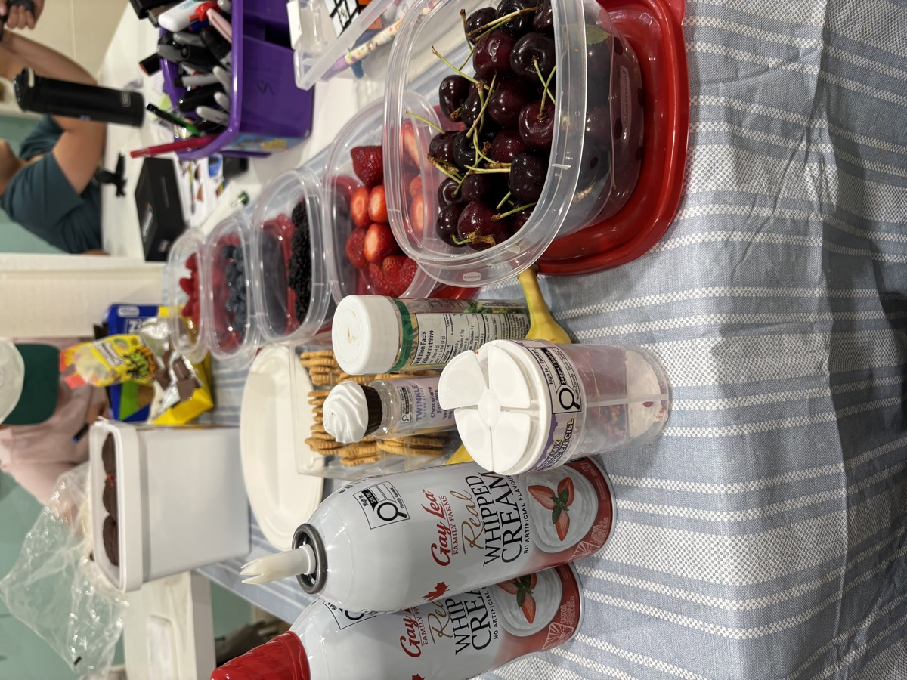
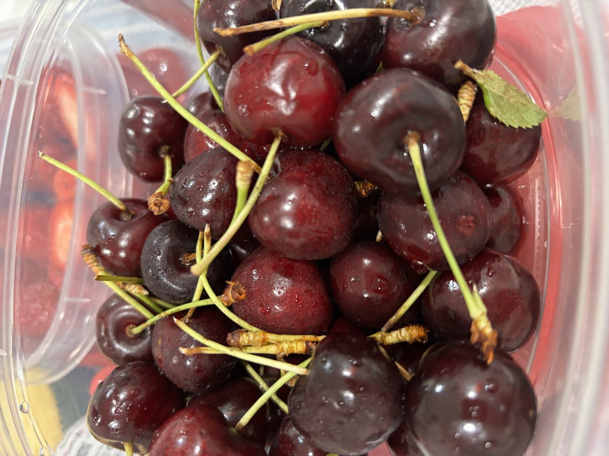
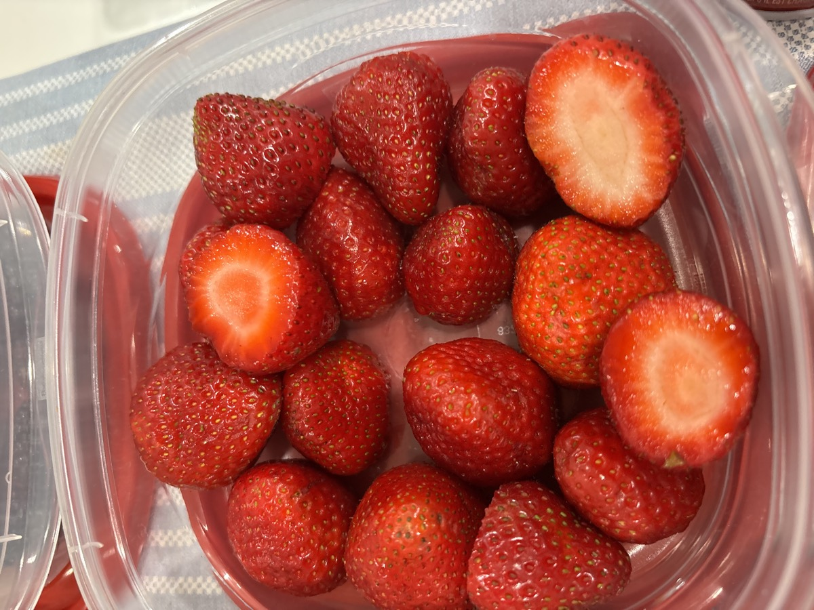
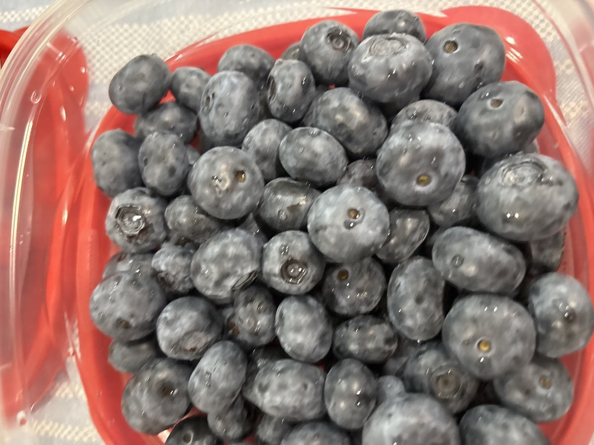
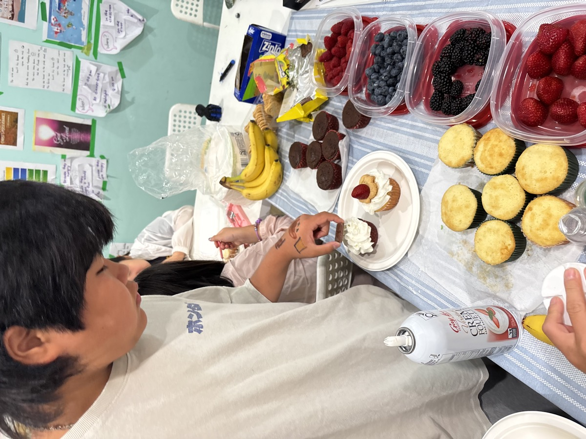
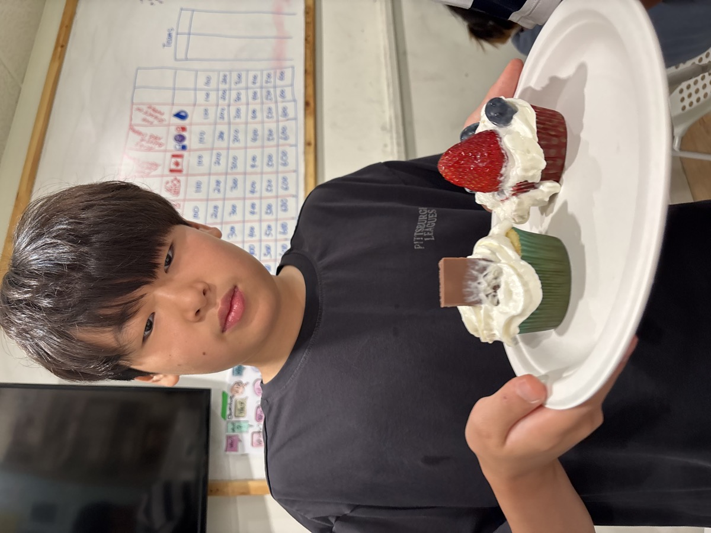
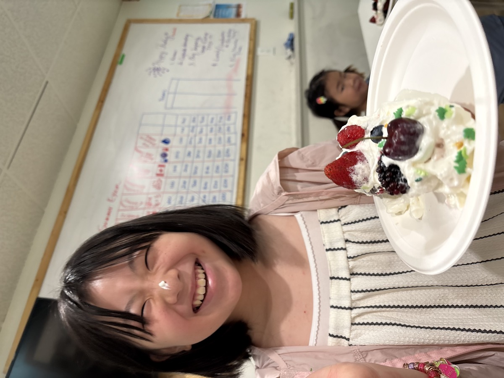
🎂 A Surprise Birthday Card · cake · live music
One of our youngest students turned six today, and her friends had been busy. The card was a full poster board — an Elemental theme in hand-coloured bubble letters, a border of stickers and drawings, a picnic scene, hearts, and HAPPY BIRTHDAY in big letters along the bottom. Entirely made by the children.

Then the cake: a rolled sponge cake, a number 6 candle, and a room full of people who wanted to sing.

And the music was live. One student on guitar, another on ukulele, a third at the piano — a birthday band assembled on the spot, with dancing from everybody who was not holding an instrument.


Why we make room for this
A surprise party is not a break from the learning — it is some of it. Planning something in secret for a friend, making the card together, and playing an instrument in front of a room all ask for the same things the classroom does: preparation, cooperation and a little courage.
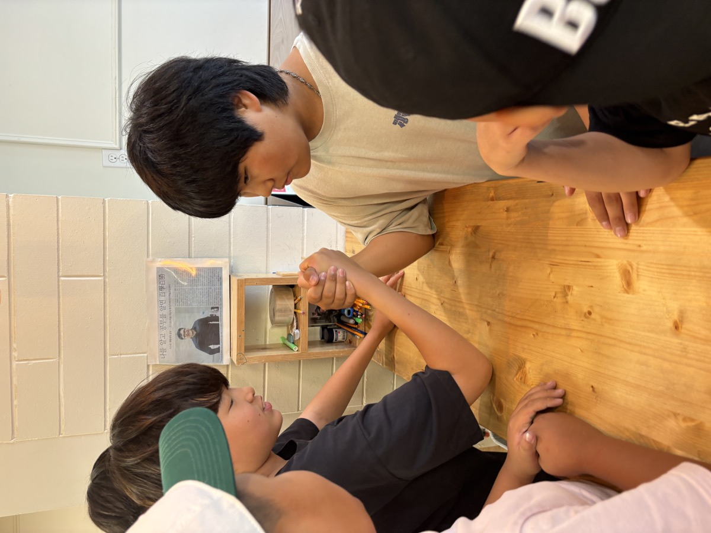
🍚 Lunch Rice · potatoes · kimchi
Lunch was Korean braised potatoes with rice and freshly cut kimchi — simple, warm and gone very quickly.


💦 Blue Mountain Park All afternoon
Then out into a properly hot August afternoon. The shallow end for the youngest, floats and water guns for everybody else, and teachers in the water the whole time.

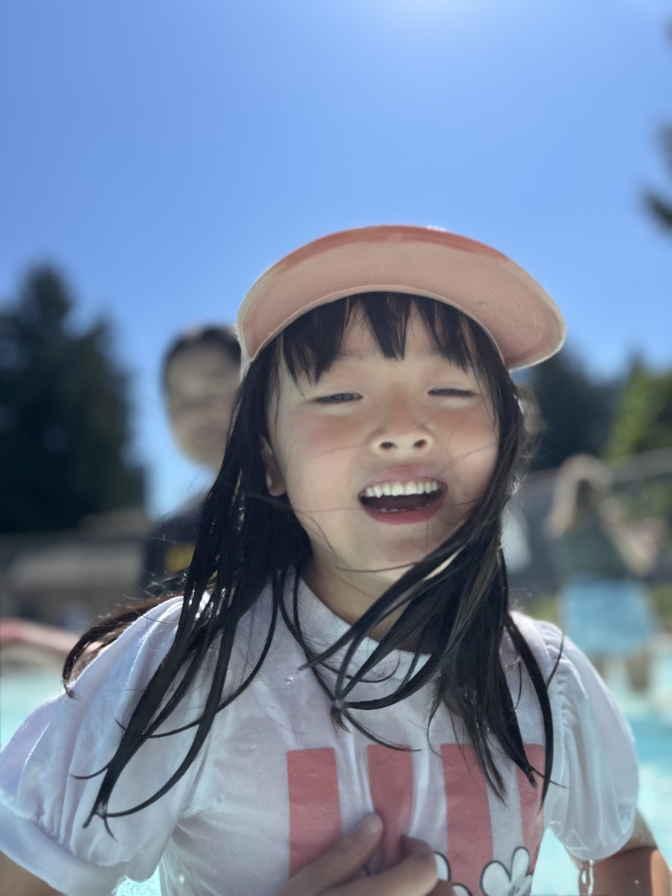


👋 See You Again, Anytime A message from teacher
“I wish them both well on their return to Korea and success in their educational goals and future endeavours. Thanks for spending quality time with us at JC Summer Camp during your stay in Canada 🇨🇦 We would be over-joyed to welcome you back again anytime!”
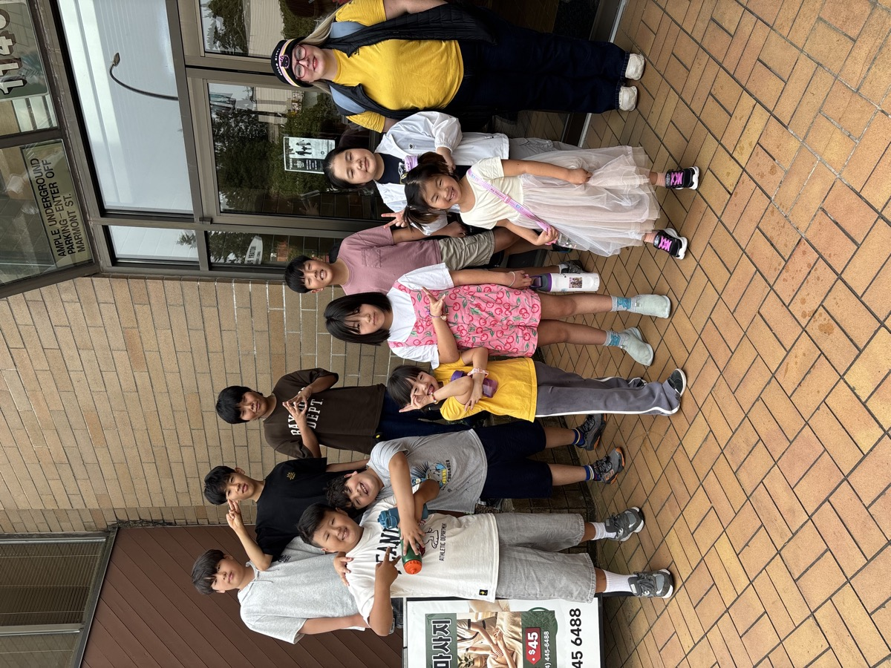
There are still a few weeks of camp to go, and they are not slowing down. As the teacher put it: “You know I will make your brains sweat a little more, but it will all be worthwhile when you are that much more ready for what September brings.” And if the studying gets too hard, there is always the pool at Blue Mountain Park waiting each day. 💙
Save the date — August 28. We will finish the final day of JC Summer Camp with a party at Teacher Diane's house. Everyone is welcome.
And in September: the JC After School tutoring & learning academy starts back up with the new school year — you are all welcome to join us for the fall.
Certificates, cake, a swim and a proper send-off — not a bad way to finish the week. Have a wonderful weekend! ❤️